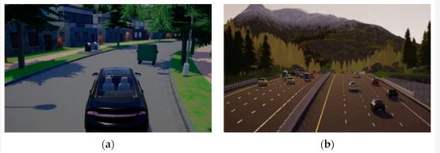
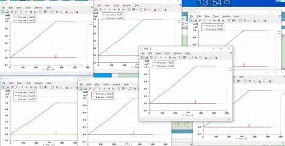
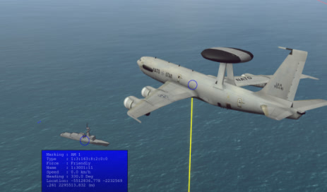
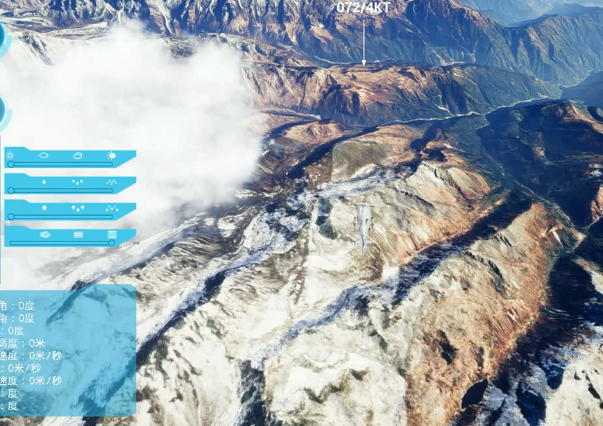
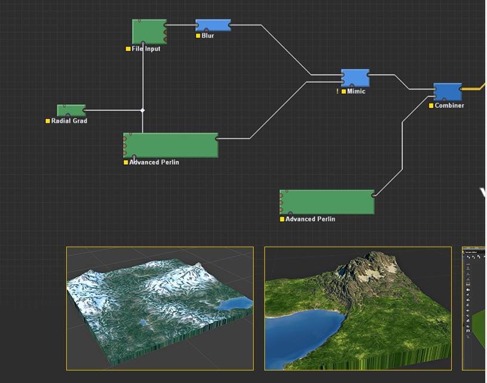

01 / VEHICLE
自動運転シミュレーション
CARLAおよびMATLABとUnreal Engineの連携による仮想シミュレーション環境です。車両状態、制御指令、テストシナリオ、タイムスタンプに基づくログ回放を扱いました。
- CARLA / UE4
- 四輪・多輪・履帯車両
- ログ回放
- 外部モデル連携



仮想環境で動作を再現し、システム間のデータをつなぎ、問題を観測できる状態をつくる。その経験を Physical AI の開発へ広げたいと考えています。
AI モデルそのものより前に、再現可能なシミュレーション環境、安定したインタフェース、計測できる実行基盤が必要だと考えています。
既存環境を理解し、入力・状態・出力の流れを確認する。問題を再現し、変更前後を比較する。この進め方は、ゲームでもシミュレーションシステムでも共通してきました。
ログと条件をそろえ、同じ挙動を確認できる状態をつくる。
C++ / Python と通信インタフェースを通じてモジュールを接続する。
主スレッド、同期、メモリ、描画負荷を観測し、改善後を再確認する。
これまでの実務経験を、車両シミュレーション、無人システム、3D可視化、実行環境、ゲーム開発の5つに整理しています。
CARLAおよびMATLABとUnreal Engineの連携による仮想シミュレーション環境です。車両状態、制御指令、テストシナリオ、タイムスタンプに基づくログ回放を扱いました。

多数のエンティティ、DDS通信、マルチノード同期、外部モデル、リアルタイム三次元表示を含む無人機群シミュレーション。






大規模地形とシーン、エンティティ状態、HUD、仮想点群をリアルタイムに表示する可視化レイヤー。



シミュレーションの設定・監視、組込みLinux上の実行環境、ハードウェア通信、現場での検証を含むシステム側の経験。


Unreal Engineを用いた大規模オンライン・マルチプラットフォーム開発。シミュレーション業務にも共通する性能、同期、安定性の経験。
Unreal Engine を表示ツールとしてだけでなく、外部システムと接続されるリアルタイム実行環境として扱ってきました。
Fixstars の開発で最初に行いたいのは、対象システムの測定可能性を高め、変更の効果を説明できる状態にすることです。
シミュレータ、AI、制御、実機側の責務とデータ境界を確認する。
入力、状態、タイミング、ログをそろえ、比較可能な条件をつくる。
CPU、スレッド、同期、通信、描画のどこに時間が使われるか確認する。
性能だけでなく、挙動、再現性、安定性が維持されているか確認する。
まずシミュレーション環境、リアルタイム統合、性能検証で貢献し、プロジェクトに応じて新しい開発環境と技術への対応範囲を広げます。
Python、C++、Unreal Engine、CARLA、仮想環境、ログ回放、外部システム連携、DDS、マルチスレッド、性能改善。
3Dシミュレーション環境、リアルタイム状態更新、モジュール間インターフェース、問題再現と計測を起点とする開発。
Isaac Sim / Omniverse、ROS2、PyTorch。
これまでのシミュレーション経験を基盤に、ニューラル再構築と3D Gaussian Splattingの活用可能性を検討しています。
NEURAL RECONSTRUCTION技術展望を見る ↗